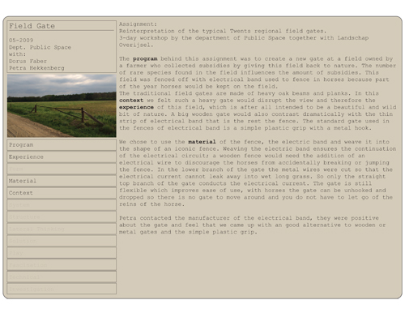

Paper Portfolio
The assignment was to make a portfolio that communicates your vision and work.
I wanted the different projects to be loose from each other so that the work could be rearranged on the table, compared or added to. Also I wanted
to avoid style for the sake of style. This led me a portfolio in the form of folders with all the basic information on the outside that can hold all
the pictures and sketches and additional text inside. All the content is separate and can be spread out on a table. This form also allows, if not
demands, me to explain the work, which is important to me.
At first I feared that this would be experienced as a very boring portfolio but the contrast between the sober folders and the colourful content works well.